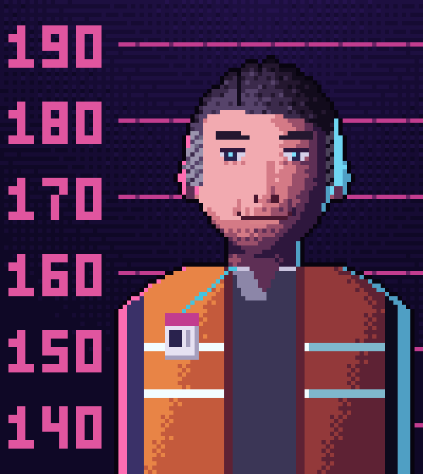

CLASIFICADO
Este expediente se abre al resolver el último caso del curso.
‹ Volver a la hoja de rutaCLASIFICADO
Este expediente se abre al resolver el último caso del curso.
‹ Volver a la hoja de ruta
admin_tempCASO CERRADOEl Fantasma de Faro
ES76 **** **** **** **** 4417
69 abonos de 10 clientes · 36 470,20 €
= cuenta de nómina de Héctor Vidal
ALM-GET-03
Muelle del Almacén central. Todas las sesiones de admin_temp salen de aquí: 75, del 4 de marzo al 27 de septiembre de 2026.
Iván dejó la cuenta configurada en 2019 y nunca la borró. Héctor la encontró.
admin_temp actuó 75 noches, y en todas Héctor había fichado de madrugada en el Almacén central.
Noches de uno sin el otro: 0.
No era una coincidencia: tres patrones independientes (el dinero, el terminal y las noches) apuntan a la misma persona. Ana suspende a Héctor. Marcos llama a Iratxe Muñoz para cerrar su reclamación: el pedido 2210 se hizo a su nombre. Iván, todavía molesto, acepta revisar todas las cuentas de servicio.
Los cabos sueltos: en 2019, Iván creó admin_temp para migrar el inventario y la dejó configurada en
ALM-GET-03, el terminal del muelle. Nunca la borró; ese fue su error, no el fraude. Héctor la encontró
allí y la usó para que todo apuntara a IT, igual que la dirección de la calle Olmo de los clientes falsos: la de Iván,
que conocía de tantos años.
Lucía: «Cuentas personales, nunca compartidas; cada una con los mínimos privilegios; y la auditoría, siempre encendida».
Héctor solo dijo una frase al salir del despacho de Ana: «Iba a devolverlo todo. Solo necesitaba unos meses». Llevaba dos años ahogado en deudas; las llamadas del banco eran por eso.
«¿Sabes quién contó en la cafetería lo de la hipoteca de Iván? Él. Y los intentos de entrar con tu usuario salieron de ALM-GET-03, el terminal del muelle. Sí: él también te estaba buscando».
Ana te llama a su despacho y te ofrece el puesto de Head of Data.
Lucía sonríe: «SQL ya lo tienes. Lo siguiente: hojas de cálculo para hablar con todo el mundo, una herramienta de BI (Power BI, Tableau o Looker) para los cuadros de mando y Python con pandas para lo que no quepa en una consulta».
‹ Volver a la hoja de ruta